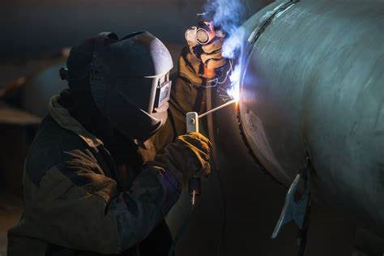
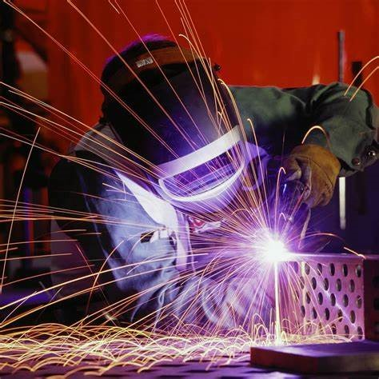

SMAW is frequently used in the construction industry for structural welding. Welders employ SMAW to join structural steel components, such as beams, columns, and girders, in the construction of buildings, bridges, and other infrastructure.

Pipe Welding
SMAW is commonly used for welding pipes, both in construction and in industries such as oil and gas. Welders use this method to join pipes of different materials and thicknesses, creating strong and durable connections.

Repair and Maintenance Welding
Welders often use SMAW for repair and maintenance work. This includes fixing damaged metal structures, equipment, or machinery. SMAW is suitable for on-site repairs and is versatile enough to handle various repair tasks.